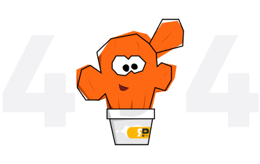

<section class="intro-404">
    <div class="intro__main">
        <picture>
            <source media="(min-width:769px)" srcset="assets/images/404/404.png" type="image/png">
            
        </picture>
        <div class="intro__main_wrapper">
            <div class="intro__main_text">
                <p class="oops">Упс!</p>
                <p class="text-normal">Кажется, я здесь один...</p>    
            </div>
            <a class="intro__main_btn btn" href="#">
                Вернуться на главную
            </a>
        </div>
    </div>
</section>
